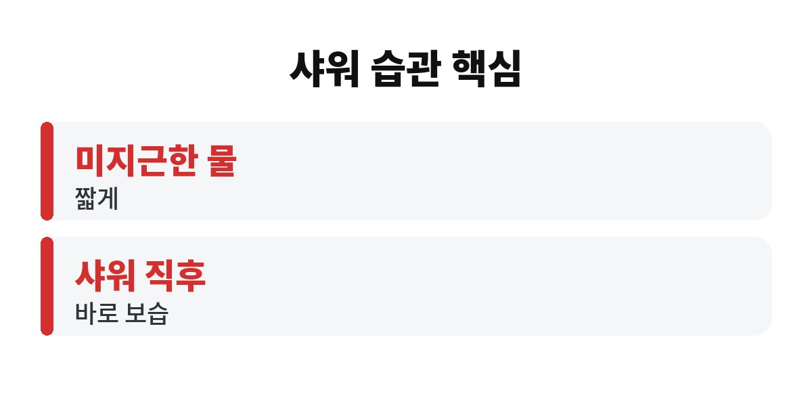

겨울 피부 가려움은 뜨거운 물로 길게 샤워하는 습관 때문에 더 심해지는 경우가 많다고 알려져 있어요. 샤워하고 나왔더니 오히려 온몸이 가렵다면, 몸이 보내는 신호일 수 있답니다.
특히 날씨가 쌀쌀해지면서 건조함을 느끼는 40·50대라면 오늘 저녁 샤워부터 바로 바꿔볼 만한 것들이 있어요. 왜 따뜻한 물이 오히려 독이 되는지 편하게 풀어볼게요.
우리 피부 가장 바깥에는 얇은 보호막이 있어요. 피부 속 수분이 날아가지 않게 잡아주고, 바깥의 자극을 막아주는 방패 같은 역할을 하죠. 이 방패는 기름기와 수분이 적당히 섞여 있을 때 튼튼해요.
그런데 뜨거운 물에 오래 있으면 이 기름기가 같이 씻겨 나가요. 그러면 방패에 틈이 생기고, 피부 속 수분이 쉽게 빠져나가면서 건조해져요. 건조한 피부는 작은 자극에도 예민해져서 가려움이 올라오기 쉬워요.
여기에 겨울 난방까지 더해지면 실내 공기가 바싹 마르죠. 겨울 피부 가려움은 결국 샤워 습관과 건조한 실내 환경이 같이 만든다고 보는 게 맞아요.
추운 날 뜨끈한 물로 샤워하면 몸이 확 풀리는 기분이 들잖아요. 저도 그 맛에 샤워하는데요, 피부 입장에서는 이야기가 달라요.
뜨거운 물은 피부 기름기를 더 잘 녹여서 가져가요. 게다가 열 때문에 피부가 붉어지고 일시적으로 가려움을 더 크게 느끼게 할 수도 있어요. 샤워할 때 시원하게 긁다가 나중에 따갑고 더 가려웠던 경험, 한 번쯤 있으시죠?
그래서 피부가 건조한 분들은 미지근한 정도의 물을 쓰고, 샤워 시간도 길지 않게 가져가는 걸 많이 권해요. 비누나 바디워시도 필요한 부위 위주로 가볍게만 쓰는 게 좋아요.

여기서 많은 분이 놓치는 부분이 있어요. 보습제를 비싼 걸 쓰는지보다 얼마나 꾸준히, 충분한 양을 바르는지가 더 중요하다는 점이에요. 팔다리처럼 건조한 부위는 얇게 한 번 바르고 끝내기보다 넉넉히 펴 발라야 피부 방패가 다시 자리를 잡는 데 도움이 돼요. 특히 정강이, 팔 안쪽, 옆구리, 등은 피지샘이 적어 겨울에 가장 먼저 건조해지는 곳이라 신경 써서 발라주시면 좋아요.
샤워 횟수도 한 번 돌아볼 필요가 있어요. 땀이 많이 난 날이 아니라면 하루에 여러 번 씻기보다 하루 한 번, 짧게 씻는 쪽이 피부 장벽에는 이로운 편이에요. 때수건이나 거친 샤워 타월로 세게 미는 습관도 겨울에는 잠시 쉬어가는 게 좋아요. 개운한 느낌은 들지만 피부 방패를 한꺼번에 벗겨내는 셈이거든요.
보습제는 '샤워 직후, 물기가 살짝 남아 있을 때' 바르는 게 좋다고 알려져 있어요. 수건으로 톡톡 두드려 물기를 대충 닦고, 피부가 마르기 전에 바로 바르는 거예요.
시간이 지나 피부가 완전히 마른 뒤에 바르면 이미 수분이 많이 날아간 뒤라 효과가 떨어질 수 있어요. 욕실에서 나오자마자 바르는 습관을 들이면 훨씬 편해요.
정리하면 이런 흐름이에요.
| 물 온도 | 뜨겁지 않은 미지근한 정도 |
| 샤워 시간 | 길게 끌지 않고 짧게 |
| 보습 타이밍 | 샤워 직후 물기가 남아 있을 때 |
보습을 열심히 하는데도 가려움이 계속되거나, 피부가 갈라지고 붉게 올라오거나, 밤에 잠을 설칠 정도라면 단순 건조함이 아닐 수도 있어요. 습진이나 다른 피부 질환이 숨어 있을 수 있거든요.
이럴 땐 참고 버티기보다 피부과에서 상태를 보는 게 가장 빠르고 안전해요. 긁어서 상처가 나면 오히려 회복이 더 오래 걸릴 수 있으니, 가렵더라도 손톱으로 긁는 건 최대한 참아보세요.
그 밖에도 도움이 되는 작은 습관이 있어요. 겉옷 안에 자극이 적은 면 소재를 입고, 실내가 너무 건조하지 않게 신경 써주세요. 물을 틈틈이 마시는 것도 기본이에요. 하나씩만 바꿔도 겨울 피부 가려움이 눈에 띄게 줄어드는 분들이 많아요.
생활 속에서 바로 해볼 수 있는 것도 정리해 볼게요. 침실 난방 온도를 너무 높이지 않고, 가습기나 젖은 수건으로 실내 습도를 조금 올려주세요. 속옷과 잠옷은 까슬한 소재 대신 부드러운 면 소재를 고르고, 새 옷은 한 번 빨아 입으면 자극을 줄일 수 있어요. 세탁 세제가 남아 있으면 가려움을 부추길 수 있으니 헹굼을 한 번 더 해주는 것도 방법이에요.
작은 습관이라고 우습게 보지 마세요. 샤워 물 온도를 조금 낮추고, 나오자마자 보습제를 바르는 단 두 가지만 2주 정도 꾸준히 해봐도 피부 느낌이 달라졌다는 분들이 꽤 많아요. 거창한 관리보다 매일 반복하는 작은 루틴이 결국 이기더라고요.
오늘 샤워 물 온도, 혹시 뜨겁게 맞춰두지 않으셨나요? 여러분은 샤워 후 보습을 언제 하시는지 댓글로 알려주세요. 도움이 되셨다면 구독해 주세요!
※ 본 글은 일반적인 건강 정보이며, 개인 증상은 반드시 전문의 상담을 권장합니다.